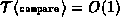

Data Structures and Algorithms
with Object-Oriented Design Patterns in Java
Data Structures and Algorithms
with Object-Oriented Design Patterns in Java
We can improve the performance of the M-way search tree
search algorithm by recognizing that
since the keys are kept in a sorted array,
we can do a binary search rather than a linear search.
Program  gives an alternate implementation
for the find method of the MWayTree class.
This method makes use of the findIndex method
which does the actual binary search.
gives an alternate implementation
for the find method of the MWayTree class.
This method makes use of the findIndex method
which does the actual binary search.
Program: MWayTree class findIndex and find methods (binary search).
The findIndex method as its argument
a Comparable object, say x,
and returns an int in the range between 0 and n-1,
where n is the number of subtrees of the given node.
The result is the largest integer i, if it exists,
such that where  is the
is the  key.
Otherwise, it returns the value 0.
key.
Otherwise, it returns the value 0.
findIndex determines its result by doing a binary search. In the worst case, iterations of the main loop (lines 14-21) are required to determine the correct index. One object comparison is done before the loop (line 10) and one comparison is done in each loop iteration (line 17). Therefore, the running time of the findIndex method is
If , this simplifies to  .
.
The find method of the MWayTree class
does the actual search.
It calls findIndex to
determine largest integer i, if it exists,
such that where  is the
is the  key (line 29).
If it turns out that , then the search is finished (lines 30-31).
Otherwise, find calls itself recursively
to search subtree
key (line 29).
If it turns out that , then the search is finished (lines 30-31).
Otherwise, find calls itself recursively
to search subtree  (line 33).
(line 33).
Consider a search in an M-way search tree. The running time of the second version of find is
where h is the height of the tree and
regardless of whether the search is successful.
If the tree is balanced and ,
then the running time of Program
is simply ,
where K is the number of keys in the tree.
 Copyright © 1998 by Bruno R. Preiss, P.Eng. All rights reserved.
Copyright © 1998 by Bruno R. Preiss, P.Eng. All rights reserved.